A, Curated Brand Gallery, and B, Connected Brand Index
Same content, same filters, same property list; only the brand composition differs. Partner logos are labelled slots, pictures are drawn stand-ins, areas are unverified. Reasoning and recommendation: README.md. Measurements: ../../qa/brand-collection/RESULTS.md.
Current direction: B, refinement 1 (before → now)
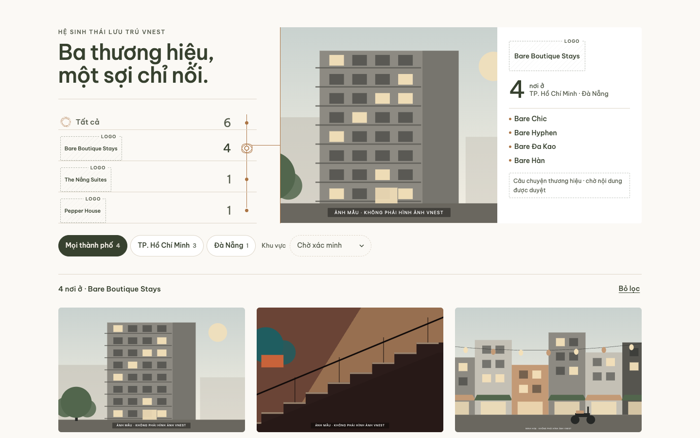
B before · 1440 px, Bare
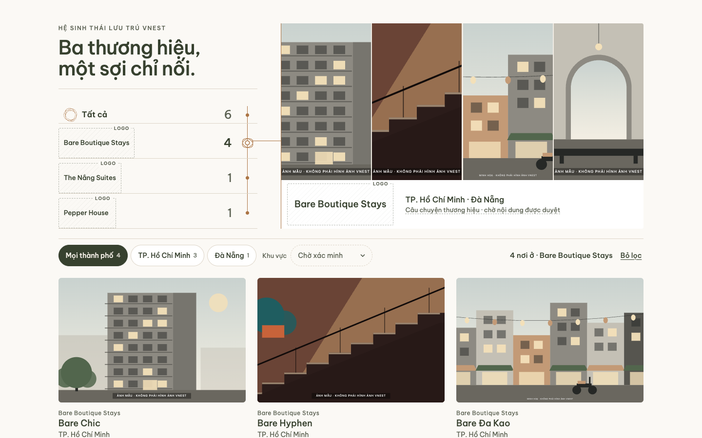
B now · 1440 px, Bare
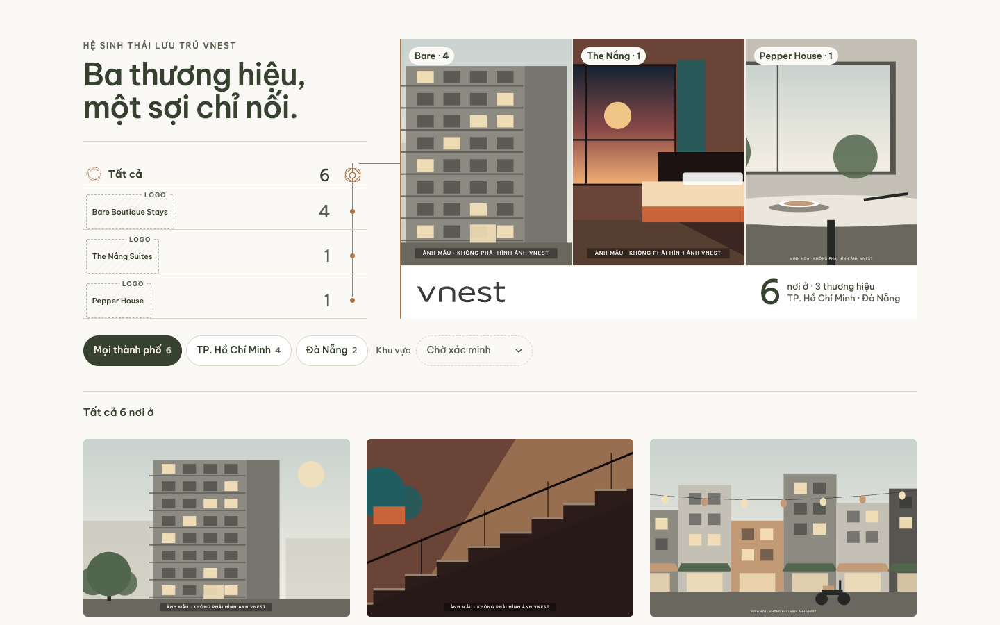
B before · 1440 px, all
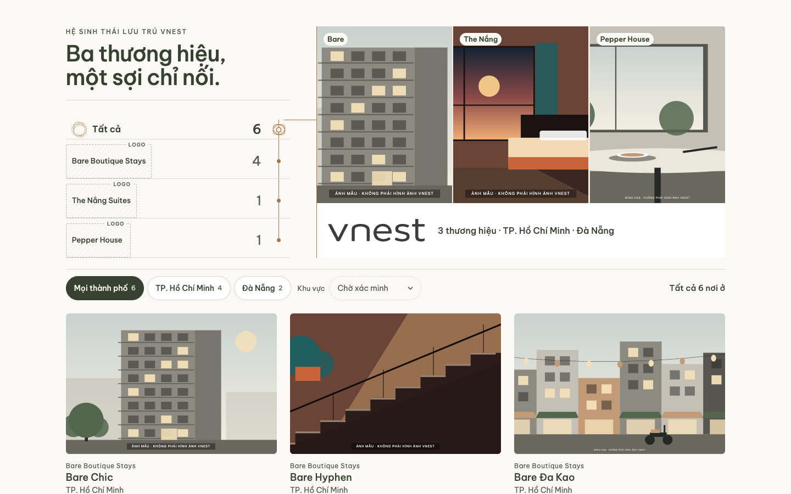
B now · 1440 px, all
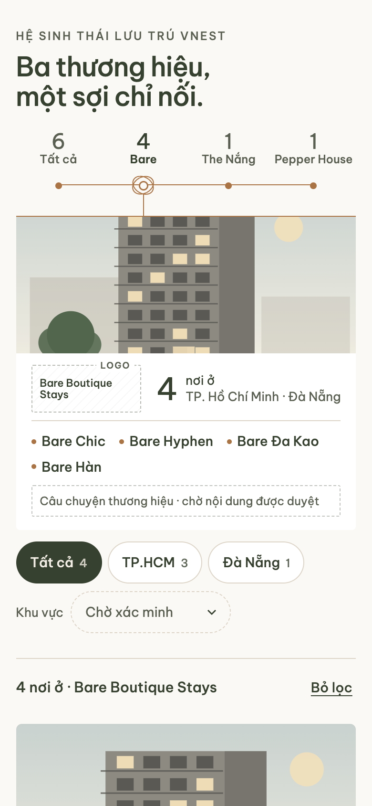
B before · 390 px, Bare
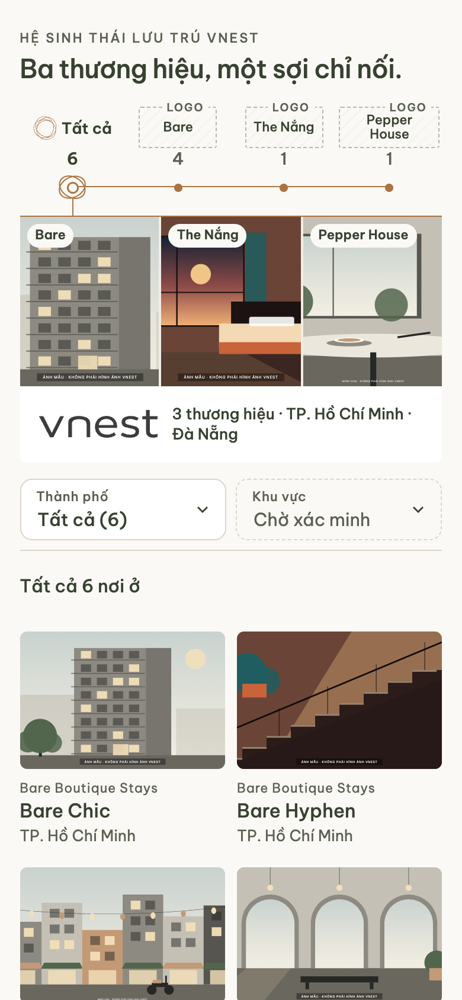
B now · 390 px, all
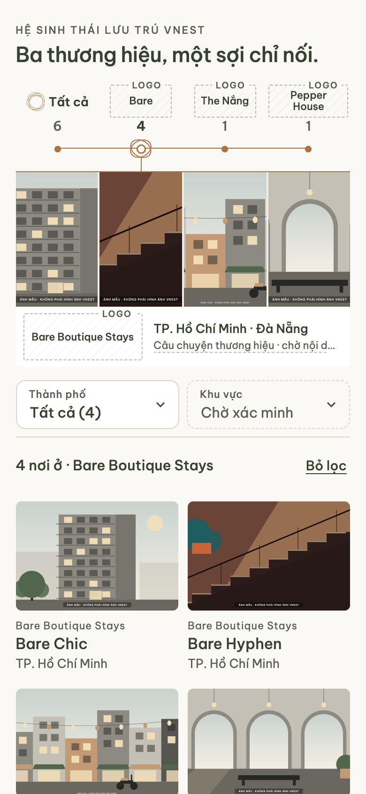
B now · 390 px, Bare
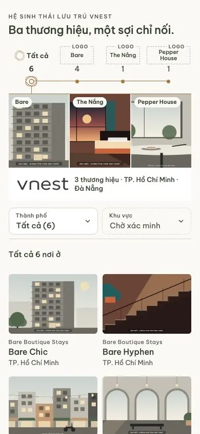
B now · recording, 390 px
Reference: A with B's copper thread (chosen first, then set aside for B)
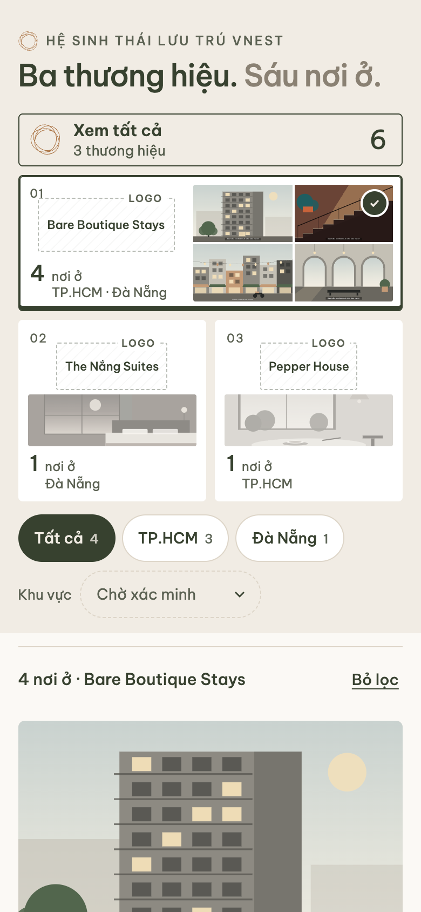
A before · tick and olive foot
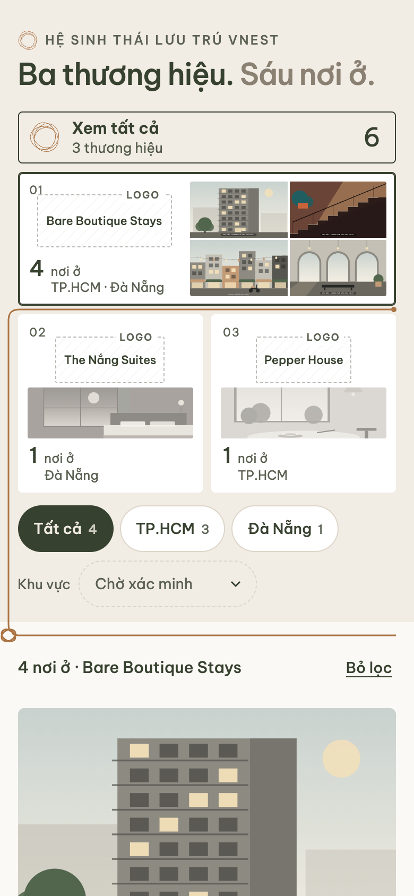
A with thread · Bare
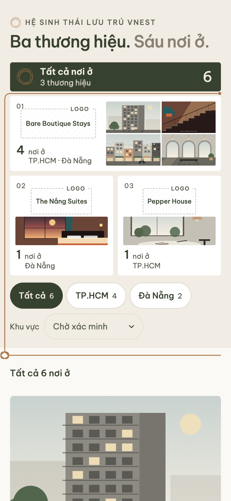
A with thread · VNest tied to all six
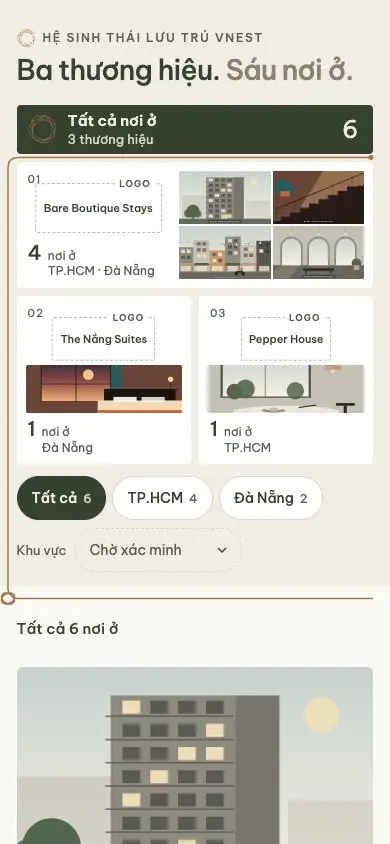
A with thread · recording, 390 px
A before · 1440 px
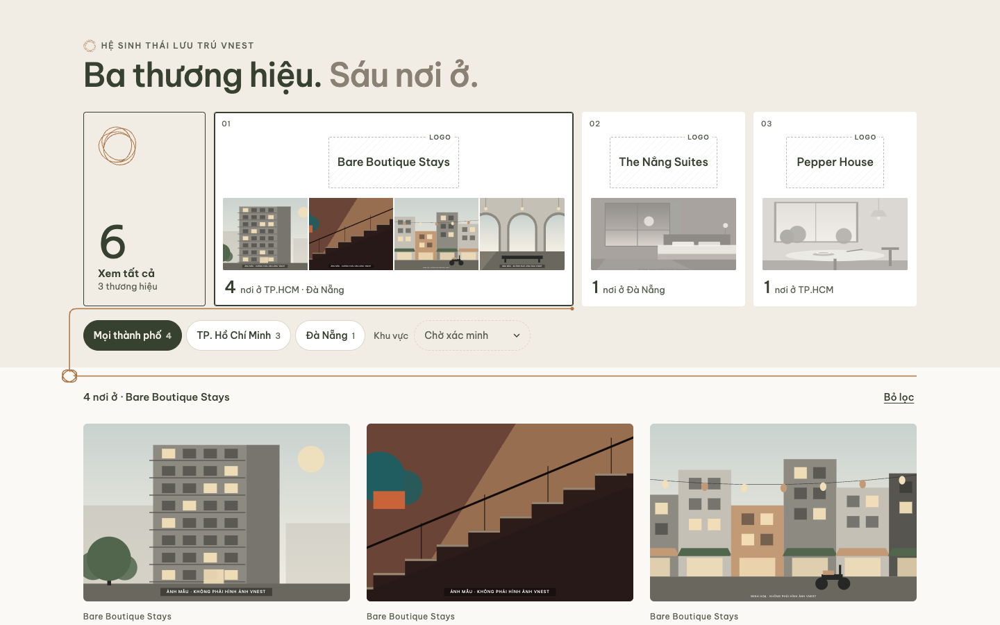
A with thread · 1440 px
Desktop, 1440 px (A shown with the thread)
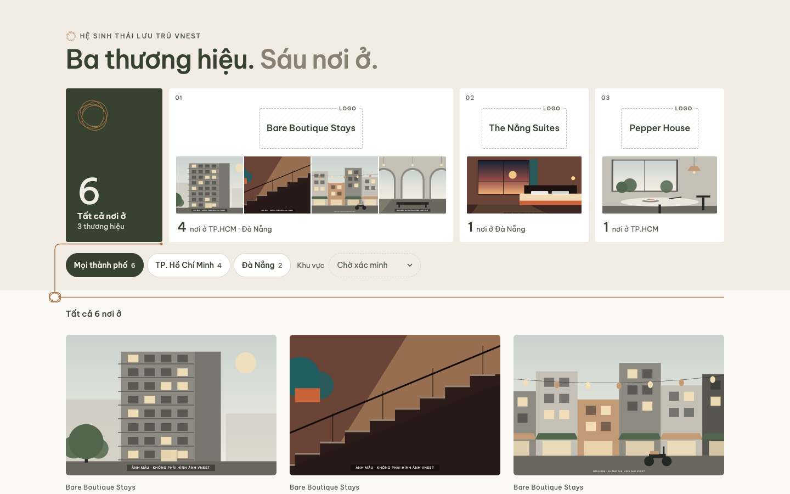
A · all brandsB · all brandsA · Bare chosen: 4 propertiesB · Bare chosen: 4 properties
Tablet, 768 px
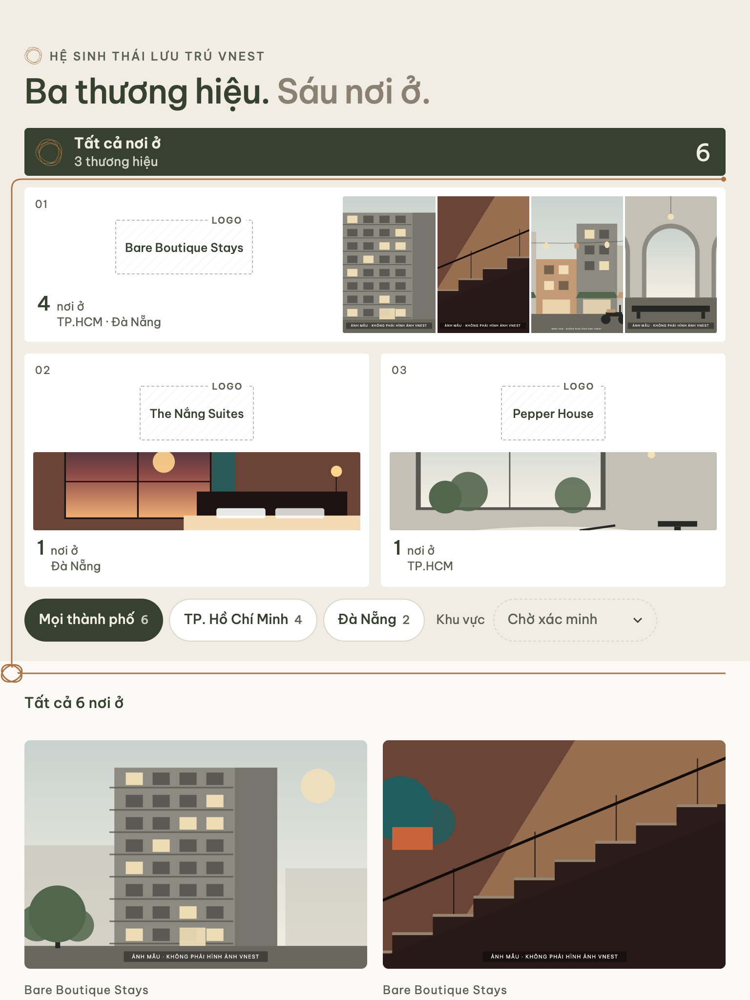
A · all
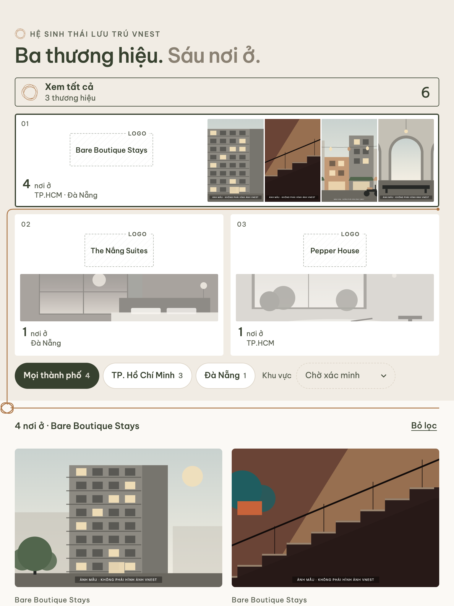
A · Bare
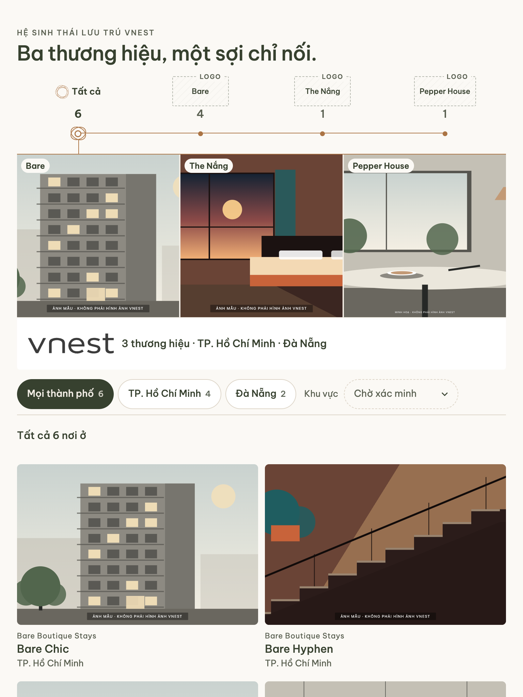
B · all
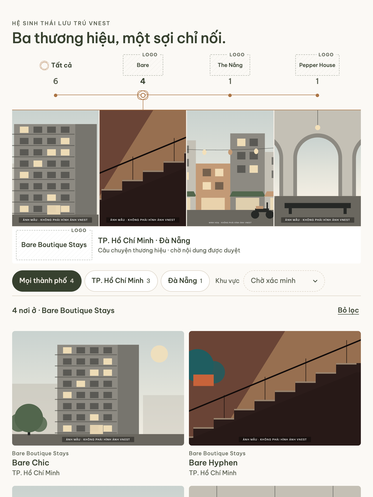
B · Bare
Phone, 390 px
A · allA · BareB · allB · Bare
Recordings: Bare → Đà Nẵng → The Nắng Suites → Pepper House (city dropped, with a note) → Bỏ lọc